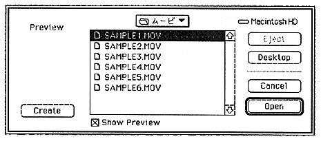

Return to previous page ｜ Return to menu ｜ Go to next page
-
2.6 Add sound
Use MoviePlayer to add sound after creating a Cinepak movie with only - video. Open a sound file in AIFF format with MoviePlayer (the movie has no video). Similarly, open a movie-only Cinepak movie and paste a movie-only movie. Be sure to hold down the Option key when pasting.
Operation
- Cinepak movie with only video and open sound file with MoviePlayer
- Copying a movie with only sound after Select All
- Paste while holding down Option key after selecting Cinepak movie with video only
- Save after playback confirmation
-
2.7 Conversion to Saturn format
Use - MovieToSaturn_J to convert the edited Cinepak compressed file into a Saturn format movie file.
Operation
- Copy MovieToSaturn_J to an appropriate folder on Macintosh.
Start - MovieToSaturn_J, select the file you want to convert, and click the "Open" button (Figure 2.7).
- A save dialog opens. Enter the file name for saving (Figure 2.8). By default, ".CPK" is added to the end of the conversion source file name.
- Click the “Save” button to start conversion.
- Automatically ends when conversion is complete.

Figure 2.7 MovieToSaturn_J movie selection dialog
Return to previous page ｜ Return to menu ｜ Go to next page